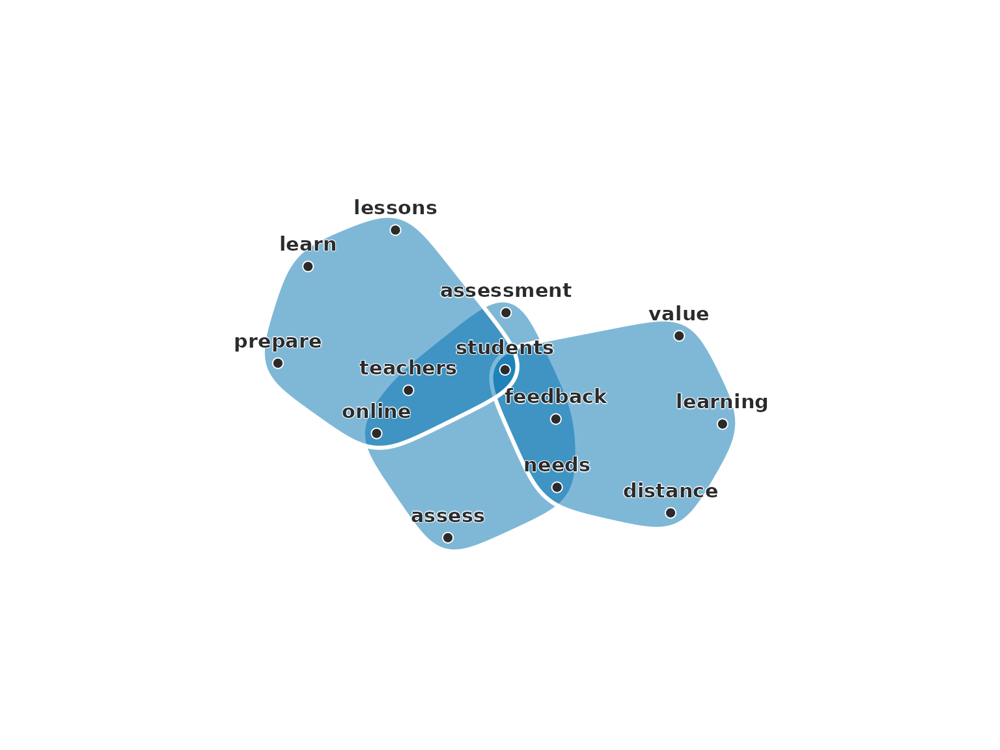
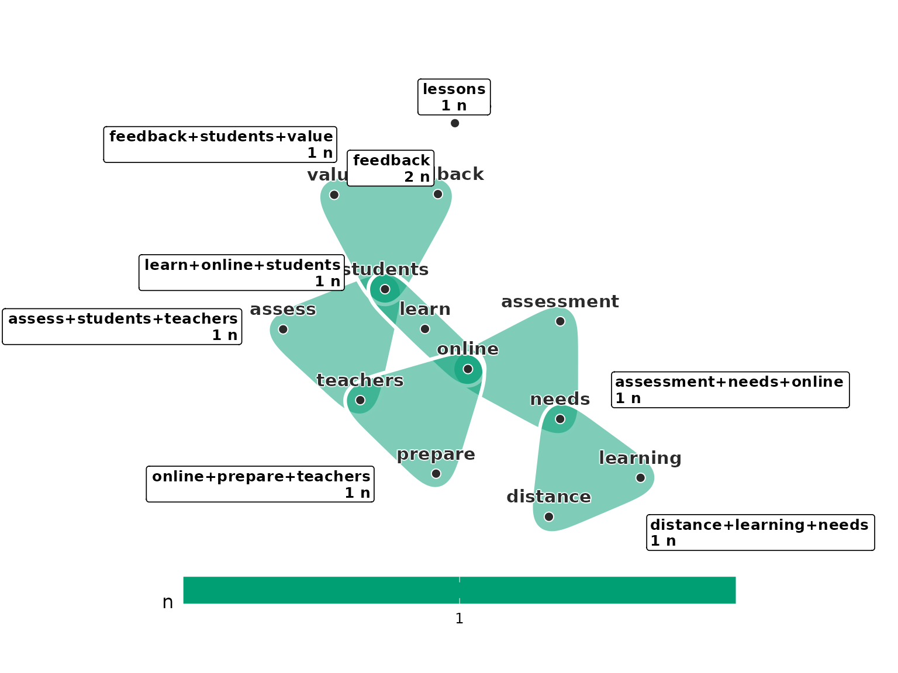
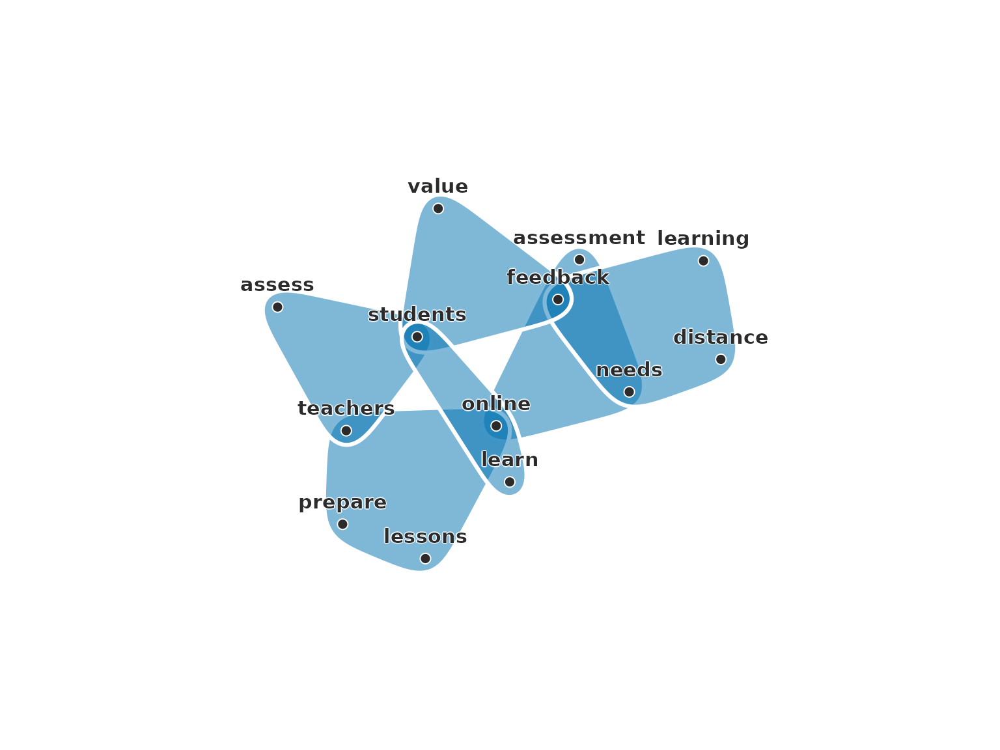
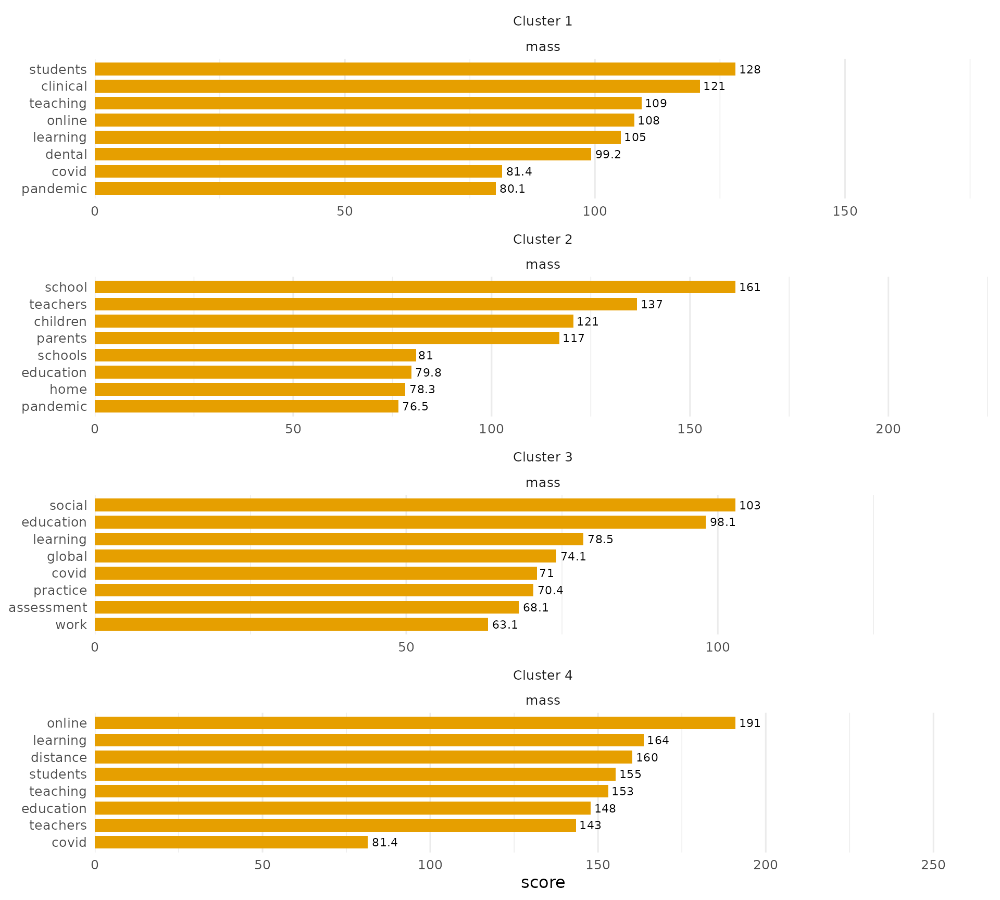

A text hypergraph relates the words and the documents of a corpus.
Its construction decides what a hyperedge is. A hyperedge can be a
document, which binds the words it contains, or a word, which binds the
documents that contain it. It can be a sentence, which binds the words
used together in one statement, or a short window of consecutive words,
which binds words that stand next to each other. It can also be a
neighbourhood in a space of sentence embeddings, which binds documents
of similar meaning whatever their words. Each construction relates
different units, so the central words and the groups of documents found
in a corpus depend on it. text_hypergraph() builds all of
them with construction = "bag", "window",
"sentence" or "knn". This document builds each
construction first on three short documents, where every hyperedge can
be seen, and then on a corpus of 165 abstracts, where the constructions
give different results.
Three documents
The three documents below share some of their words. Stop words such
as “the” and “of” are removed with stop_words_en().
docs <- c(
online = "Students learn online. Teachers prepare online lessons.",
assess = "Teachers assess students. Online assessment needs feedback.",
distance = "Distance learning needs feedback. Students value feedback."
)
stops <- stop_words_en()Bag of words
The bag construction relates each document to the words it contains,
and it ignores their order. With nodes = "word", the words
are the nodes and each document is a hyperedge over its words. The
orientation follows the setting of Ding et al. (2020), in which a
hyperedge holds the words of a text.
bag_word <- text_hypergraph(docs, nodes = "word", stop_words = stops)
bag_word
#> Text hypergraph: 3 documents, 13 words (words as nodes, weight = n)
#> Hyperedges: 3 (documents); sizes 6-7, median 6
#> doc word count weight
#> assess assess 1 1
#> assess assessment 1 1
#> assess feedback 1 1
#> assess needs 1 1
#> assess online 1 1
#> assess students 1 1
#> assess teachers 1 1
#> distance distance 1 1
#> distance feedback 2 2
#> distance learning 1 1
#> ... 9 more rowsThe figure plots each document as a region around its words.
plot(bag_word)
The three regions overlap where documents share words. students lies in all three documents, and feedback, needs, online and teachers lie in two. The other words belong to one document each.
With nodes = "doc", the default, the orientation
reverses. The documents are the nodes, and each word is a hyperedge over
the documents that contain it. This orientation suits the clustering and
classification of documents (Hayashi et al. 2020). Its incidence matrix
is the transpose of the incidence matrix above, so the two hypergraphs
are duals of each other (Berge 1989), and dual_hypergraph()
turns one into the other.
bag_doc <- text_hypergraph(docs, stop_words = stops)
dual_hypergraph(bag_doc)
#> Text hypergraph: 3 documents, 13 words (words as nodes, weight = n)
#> Hyperedges: 3 (documents); sizes 6-7, median 6
#> doc word count weight
#> assess assess 1 1
#> assess assessment 1 1
#> assess feedback 1 1
#> assess needs 1 1
#> assess online 1 1
#> assess students 1 1
#> assess teachers 1 1
#> distance distance 1 1
#> distance feedback 2 2
#> distance learning 1 1
#> ... 9 more rowsThe dual of the document-oriented hypergraph has the 13 words as
nodes and the 3 documents as hyperedges, the same hypergraph as
bag_word.
The incidence weight of a word in a document is its count by default.
With weight = "tfidf", the count is multiplied by the
inverse document frequency log((1 + N) / (1 + df)) + 1,
where N is the number of documents and df the number that contain the
word (Manning et al. 2008). A word in every document keeps its count,
and a word in fewer documents gains weight. The vocabulary table holds
the count, the document frequency and the inverse document frequency of
each word.
bag_tfidf <- text_hypergraph(docs, nodes = "word", weight = "tfidf",
stop_words = stops)
hg_get(bag_tfidf, what = "vocabulary")
#> word count doc_freq idf
#> 1 assess 1 1 1.693147
#> 2 assessment 1 1 1.693147
#> 3 distance 1 1 1.693147
#> 4 feedback 3 2 1.287682
#> 5 learn 1 1 1.693147
#> 6 learning 1 1 1.693147
#> 7 lessons 1 1 1.693147
#> 8 needs 2 2 1.287682
#> 9 online 3 2 1.287682
#> 10 prepare 1 1 1.693147
#> 11 students 3 3 1.000000
#> 12 teachers 2 2 1.287682
#> 13 value 1 1 1.693147A word in all three documents has an inverse document frequency of 1, and a word in one document has 1.69.
Windows of words
The window construction keeps the order of the words. It slides a
window of window tokens over each document and makes a
hyperedge of the distinct words in each window (Ding et al. 2020). A
window never crosses from one document into the next, and windows with
the same words form one hyperedge whose weight is the number of such
windows. With window_mode = "sliding", the default, the
window moves one token at a time. With
window_mode = "tumbling", it moves a whole window at a
time, so the windows do not overlap.
tumbling <- text_hypergraph(docs, construction = "window", window = 3,
window_mode = "tumbling", stop_words = stops)
tumbling
#> Text hypergraph: 3 documents, 13 words (windowed hyperedges: w = 3, tumbling, 9 windows)
#> Hyperedges: 8 (distinct windows); sizes 1-3, median 3
#> edge word weight
#> assess+students+teachers assess 1
#> assess+students+teachers students 1
#> assess+students+teachers teachers 1
#> assessment+needs+online assessment 1
#> assessment+needs+online needs 1
#> assessment+needs+online online 1
#> distance+learning+needs distance 1
#> distance+learning+needs learning 1
#> distance+learning+needs needs 1
#> feedback feedback 2
#> ... 10 more rowsThe figure plots each window as a region with its words and its count.
plot(tumbling)
Each document has seven tokens after the stop words are removed, so
it gives two windows of three tokens and a last window of one. The last
windows of the second and third documents hold only
feedback, so they form one hyperedge with a count of 2.
Words that stand far apart in a document share no window, so
lessons is linked to no other word. The sliding windows of
the same size give 13 distinct hyperedges against 8 tumbling ones,
because every run of three consecutive words becomes a window.
Sentences
The sentence construction makes a hyperedge of each sentence, the
construction of HyperGAT (Ding et al. 2020). A document is split at
., !, ? and ;, and
the weight of a word in a sentence is its count there. Two words are
related when they occur in the same sentence.
sentences <- text_hypergraph(docs, construction = "sentence",
stop_words = stops)
hg_get(sentences, what = "sentences")
#> edge doc sentence n_tokens
#> 1 online#1 online 1 3
#> 2 online#2 online 2 4
#> 3 assess#1 assess 1 3
#> 4 assess#2 assess 2 4
#> 5 distance#1 distance 1 4
#> 6 distance#2 distance 2 3The table has one row for each sentence, with its document, its position in the document and its number of tokens.
plot(sentences)
The six sentences split each document in two. teachers
and prepare share a sentence, and teachers and
feedback share a document without sharing a sentence. The
bag construction relates the second pair and the sentence construction
does not.
Neighbourhoods of meaning
The kNN construction uses no words. It places each document at a
point in the space of a sentence embedding, where documents with similar
meaning lie close together, and makes one hyperedge for each document
from the document and its k nearest neighbours by cosine
similarity. Hypergraph neural networks build hyperedges from feature
space in this way (Feng et al. 2019). The construction needs embeddings,
which the corpus below provides.
The corpus
covid_abstracts holds 165 abstracts of research on
education during COVID-19, and covid_embeddings their
embeddings from the all-MiniLM-L6-v2 model, 384 numbers for
each abstract.
The vocabulary of a corpus has a long tail of rare words.
stop_words removes a list of words, min_count
removes the words that occur fewer times in the corpus, and
min_chars removes words shorter than a number of
characters. max_words and coverage cap the
vocabulary at a number of words or at the most frequent words that cover
a share of the tokens. Here the stop words are those of
stop_words_en() with words common to research abstracts,
min_count = 3 keeps words that occur at least three times,
and min_chars = 3 drops shorter fragments.
stops <- c(stop_words_en(), "using", "used", "use", "based", "results",
"study", "research", "paper", "article", "findings", "data")
corpus_doc <- text_hypergraph(covid_abstracts, column = "abstract",
id = "doc", weight = "tfidf",
stop_words = stops, min_count = 3L,
min_chars = 3L)
#> vocabulary pruned to 1426 of 3975 words, retaining 81.61% of tokens
head(hg_get(corpus_doc, what = "vocabulary"), 8)
#> word count doc_freq idf
#> 1 ability 8 7 4.032546
#> 2 able 5 5 4.320228
#> 3 academic 47 30 2.678001
#> 4 academics 5 3 4.725693
#> 5 acceptance 3 1 5.418841
#> 6 access 18 13 3.472930
#> 7 accessibility 9 6 4.166078
#> 8 accordance 3 3 4.725693The filters reduce the vocabulary from 4,114 words to 1,426. The same filters apply to every token construction below, so the constructions differ only in what a hyperedge is.
corpus_word <- text_hypergraph(covid_abstracts, column = "abstract",
id = "doc", nodes = "word", weight = "tfidf",
stop_words = stops, min_count = 3L,
min_chars = 3L)
#> vocabulary pruned to 1426 of 3975 words, retaining 81.61% of tokens
corpus_window <- text_hypergraph(covid_abstracts, column = "abstract",
id = "doc", construction = "window",
window = 3, stop_words = stops,
min_count = 3L, min_chars = 3L)
#> vocabulary pruned to 1426 of 3975 words, retaining 81.61% of tokens
corpus_sentence <- text_hypergraph(covid_abstracts, column = "abstract",
id = "doc", construction = "sentence",
stop_words = stops, min_count = 3L,
min_chars = 3L)
#> vocabulary pruned to 1426 of 3975 words, retaining 81.61% of tokens
corpus_knn <- text_hypergraph(covid_abstracts, column = "abstract",
id = "doc", construction = "knn", k = 10,
embeddings = covid_embeddings)The constructions give hypergraphs of different shapes from the same text. The document-oriented bag has 165 documents as nodes and 1,426 words as hyperedges, each word in 7.2 documents on average. The word-oriented bag is its dual, with 165 hyperedges of 61.8 words. The window construction gives 13,120 distinct windows of up to three words, and the sentence construction 1,456 sentences of 9.4 words on average. The kNN construction has one hyperedge of 11 documents for each abstract. In the bag, two words share a hyperedge when they occur in the same abstract, which holds for 22% of the pairs of words. In the sentence construction they must share a sentence, which holds for 6%, and in the window construction they must stand within three words of each other, which holds for 2.1%.
Central words under three constructions
The bag, window and sentence constructions have the words as nodes.
The clique-motif eigenvector centrality of a word is its eigenvector
centrality in the clique expansion of the hypergraph, in which two words
are linked with a weight that grows with the hyperedges they share
(Benson 2019). With sort_by = "clique" and
n = 10, each table shows the ten most central words.
hg_centrality(corpus_word, type = "clique", sort_by = "clique", n = 10)
#> node clique
#> 1 covid 0.2816840
#> 2 pandemic 0.2725503
#> 3 education 0.2510500
#> 4 students 0.1938140
#> 5 learning 0.1920954
#> 6 online 0.1718855
#> 7 teaching 0.1664281
#> 8 educational 0.1168923
#> 9 teachers 0.1091681
#> 10 challenges 0.1089907
hg_centrality(corpus_window, type = "clique", sort_by = "clique", n = 10)
#> node clique
#> 1 covid 0.4105486
#> 2 pandemic 0.3980188
#> 3 education 0.3055008
#> 4 online 0.2837621
#> 5 learning 0.2698000
#> 6 teaching 0.2280932
#> 7 students 0.2049750
#> 8 teachers 0.1348209
#> 9 higher 0.1314352
#> 10 distance 0.1246702
hg_centrality(corpus_sentence, type = "clique", sort_by = "clique", n = 10)
#> node clique
#> 1 covid 0.3535090
#> 2 pandemic 0.3284308
#> 3 education 0.3188085
#> 4 learning 0.2634389
#> 5 online 0.2630279
#> 6 students 0.2598502
#> 7 teaching 0.2303710
#> 8 teachers 0.1817948
#> 9 challenges 0.1103918
#> 10 higher 0.1067574The three constructions share 8 of their ten words, covid, pandemic,
education, students, learning, online, teaching and teachers. These
words occur throughout the corpus, so every construction places them at
the centre. The constructions differ at the end of the lists. Only the
window construction ranks distance among its ten, and only the bag ranks
educational. distance is 10th in the window ranking, 16th
in the sentence ranking and 146th in the bag ranking. Of its 53
occurrences, 50 are followed by education or
learning, and the window construction links
distance to these words at every occurrence. The bag links
distance to every word of the abstracts that contain it and
treats the phrase like any other pair of words. The window construction
thus raises the words of frequent phrases, and the sentence
construction, whose hyperedges are wider than a window and narrower than
an abstract, places distance between the two.
Groups of documents under two constructions
The bag and kNN constructions have the documents as nodes.
hg_cluster() with type = "random_walk"
partitions the documents by spectral clustering on the Laplacian of the
random walk on the hypergraph (Hayashi et al. 2020), here into
k = 4 groups, and seed = 1 fixes the random
starts of its k-means step. hg_topic_sizes() counts the
documents in each group.
bag_groups <- hg_cluster(corpus_doc, k = 4, type = "random_walk", seed = 1)
hg_topic_sizes(corpus_doc, bag_groups)
#> topic n share
#> 1 Cluster 1 16 0.0969697
#> 2 Cluster 2 43 0.2606061
#> 3 Cluster 3 30 0.1818182
#> 4 Cluster 4 76 0.4606061
knn_groups <- hg_cluster(corpus_knn, k = 4, type = "random_walk", seed = 1)
hg_topic_sizes(corpus_knn, knn_groups)
#> topic n share
#> 1 Cluster 1 41 0.2484848
#> 2 Cluster 2 41 0.2484848
#> 3 Cluster 3 37 0.2242424
#> 4 Cluster 4 46 0.2787879The bag groups hold between 16 and 76 documents, and the kNN groups between 37 and 46. A kNN hyperedge holds the same number of documents for every abstract, which spreads the documents evenly. A bag hyperedge holds every document that uses a word, so common words bind many documents together.
The kNN hypergraph holds no words, so the words of its groups are
read from the bag. hg_keywords() ranks the words of each
group by their mass, the summed tf-idf weight that the documents of the
group place on the word. The figure plots the eight words of largest
mass in each group.
knn_keywords <- hg_keywords(corpus_doc, knn_groups, n = 8)
plot(knn_keywords)
The groups lead with Cluster 1 (students, clinical, teaching, online); Cluster 2 (school, teachers, children, parents); Cluster 3 (social, education, learning, global); Cluster 4 (online, learning, distance, students). Each group is a theme of research on education in the pandemic, and the kNN construction finds the themes from the meaning of the abstracts alone.
The words of the bag groups come from the same table.
hg_keywords(corpus_doc, bag_groups, n = 8)
#> type cluster size words
#> mass Cluster 1 16 clinical, dental, students, teachers, learning, distan...
#> mass Cluster 2 43 school, children, parents, health, teachers, schools, ...
#> mass Cluster 3 30 system, science, social, students, covid, education, p...
#> mass Cluster 4 76 online, learning, teaching, education, students, covid...
#> 32 rows in the returned long table (rank, score, share, n_docs)hg_agreement() with what = "table"
cross-tabulates the two partitions, one row for each pair of a kNN group
and a bag group with the number of documents they share. Without
what, it gives the summary. aligned counts the
documents that fall in the bag group holding most of their kNN group,
agreement is their share, and ari is the
adjusted Rand index, which is 1 for identical partitions and near 0 for
unrelated ones.
hg_agreement(knn_groups, bag_groups, what = "table")
#> label_x label_y n
#> 1 Cluster 1 Cluster 1 9
#> 2 Cluster 1 Cluster 2 4
#> 3 Cluster 1 Cluster 3 7
#> 4 Cluster 1 Cluster 4 21
#> 5 Cluster 2 Cluster 1 1
#> 6 Cluster 2 Cluster 2 32
#> 7 Cluster 2 Cluster 3 2
#> 8 Cluster 2 Cluster 4 6
#> 9 Cluster 3 Cluster 1 2
#> 10 Cluster 3 Cluster 2 4
#> 11 Cluster 3 Cluster 3 18
#> 12 Cluster 3 Cluster 4 13
#> 13 Cluster 4 Cluster 1 4
#> 14 Cluster 4 Cluster 2 3
#> 15 Cluster 4 Cluster 3 3
#> 16 Cluster 4 Cluster 4 36
hg_agreement(knn_groups, bag_groups)
#> n agreement aligned ari
#> 1 165 0.5757576 107 0.2177748The two partitions find the same themes and draw their boundaries differently. 107 of the 165 documents are aligned, and the adjusted Rand index is 0.22. The themes of school and of online learning agree. The kNN group on online, learning, distance has 36 of its 46 documents in the bag group on online, learning, teaching, and the kNN group on school, teachers, children has 32 of its 41 in the bag group on school, children, parents. The theme of clinical teaching differs. The kNN group on students, clinical, teaching keeps 9 of its 41 documents in the bag group on clinical, dental, students, which holds only 16 documents, and places 21 in the bag group on online, learning, teaching. The bag forms a small group from the abstracts whose vocabulary is clinical and dental, and it places most of the other abstracts of the kNN group with the abstracts on online learning, whose words they share. The kNN construction keeps these abstracts in one group because their embeddings lie close together.
Choice of construction
The construction follows from the relation that the analysis is
about. The bag relates documents through shared words. Its document
orientation suits the clustering and classification of documents, and
its word orientation the centrality of words across documents. The
window construction relates words that stand next to each other, which
suits phrases and collocations. Its number of distinct windows grows
with the size of the corpus, which min_count and the other
filters keep in check. The sentence construction relates words used in
one statement, a narrower relation than the document and a wider one
than the window. The kNN construction relates documents by meaning and
uses no words, so its results depend on the encoder that produced the
embeddings, and a result that matters is repeated with a second
encoder.
References
Benson, A. R. (2019). Three hypergraph eigenvector centralities. SIAM Journal on Mathematics of Data Science, 1(2), 293-312.
Berge, C. (1989). Hypergraphs: Combinatorics of Finite Sets. North-Holland.
Ding, K., Wang, J., Li, J., Li, D., & Liu, H. (2020). Be more with less: Hypergraph attention networks for inductive text classification. Proceedings of EMNLP 2020, 4927-4936. https://doi.org/10.18653/v1/2020.emnlp-main.399
Feng, Y., You, H., Zhang, Z., Ji, R., & Gao, Y. (2019). Hypergraph neural networks. Proceedings of the AAAI Conference on Artificial Intelligence, 33(01), 3558-3565. https://doi.org/10.1609/aaai.v33i01.33013558
Hayashi, K., Aksoy, S. G., Park, C. H., & Park, H. (2020). Hypergraph random walks, Laplacians, and clustering. Proceedings of CIKM 2020, 495-504. https://doi.org/10.1145/3340531.3412034
Manning, C. D., Raghavan, P., & Schütze, H. (2008). Introduction to Information Retrieval. Cambridge University Press.